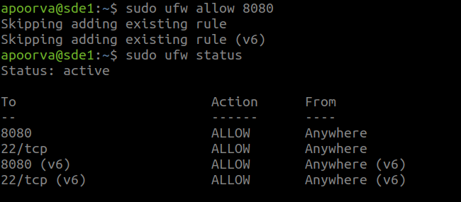

Objective
This section aims to set up the required infrastructure of Jenkins to perform the task and solve the 2nd point of theProblem Statement.
Installation of Jenkins
What is Jenkins?
Jenkins is a self-contained, open-source automation server which can be used to automate all sorts of tasks related to building, testing, and delivering or deploying software.
Prerequisite
I have setup ubuntu 18.04 VM for installing Jenkins from Documentation.
I have installed java 8 OpenJDK and JRE (Java Development Kit and Java Runtime Environment) which is used to develop and run the software, I have used this Link to download the same.
Installation steps for Jenkins
Add the repository key to the terminal:
wget -q -O - https://pkg.jenkins.io/debian-stable/jenkins.io.key | sudo apt-key add -

The system will return OK
Next, add the Debian package repository address:
sudo sh -c 'echo deb https://pkg.jenkins.io/debian-stable binary/ > \
/etc/apt/sources.list.d/jenkins.list
sudo apt update

Now install Jenkins and it’s dependencies:
sudo apt install jenkins
Starting Jenkins
The systemctl command is used to manage "systemd" services and service manager:
sudo systemctl start jenkins
Check the status of Jenkins service using the below command:
sudo systemctl status jenkins

If the Jenkins has installed successfully, then the output will show as Active: active(excited). To reach it from a web browser I will adjust the firewall rules to complete the initial setup.
Set-up a Firewall with UFW
Firewall is a software controlling incoming and outgoing network traffic. Firewall is able to manage traffic by monitoring network ports.
By default, Jenkins runs on port 8080. Opening using ufw(uncomplicated firewall):
sudo ufw allow 8080
To check the status of the ufw:
sudo ufw status

If the status shows "Inactive". Then enable using following command
To configure your server to allow incoming SSH connections, you can use this command:
sudo ufw allow ssh
To enable UFW, use this command:
sudo ufw enable
Setting up Jenkins
To find your server's name or domain name enter the following command in your terminal:
ifconfig
Using the server's name or domain name as shown in the following command, entered that into a browser which in turn gave the Unlock Jenkins window.
http://your_server_name_or_domain:8080
Using that server name

The Unlock Jenkins window shows where the admin password is stored. In the terminal I will use the cat command to display the password:
sudo cat /var/lib/jenkins/secrets/initialAdminPassword
The 32-character alphanumeric password is displayed in the terminal, paste it onto Administrator password field, and then click continue.
Customize Jenkins

In the Customize Jenkins select "install suggested plugins" which will start installation process directly and press continue.
Create Admin User

Add the required credentials, click on save and continue as admin.
The "Instance configuration" page will be displayed which will ask to confirm the preferred URL for Jenkins instance, click on save and finish.
Installation Starts

Once the process is over click on Reboot which will restart the Jenkins.
Now, Jenkins is installed!